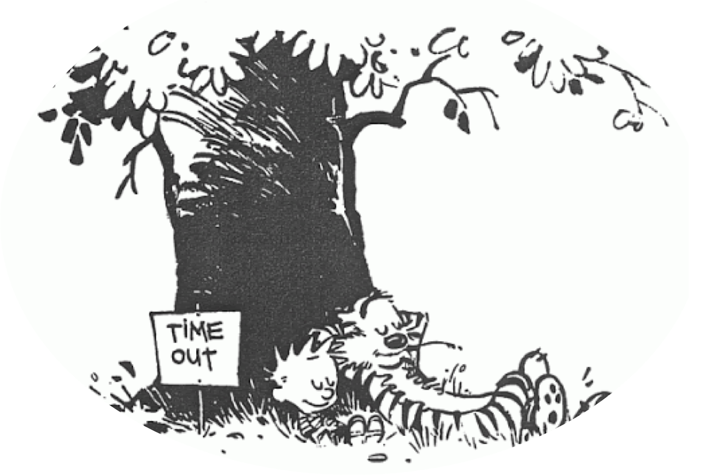

A Month At A Time
January
YOU SAY YOU WANT A REVOLUTION, WELL YOU KNOW
WE ALL WANT TO CHANGE THE WORLD
Here we are, the first turning point of 2021. What a time to be alive. I thought I was going to spend some time setting up the stage for this new thing I started doing, but fuck that. This January has been too good for wasting time on pleasantries so I’ll be very very quick and then get to the fun shit.
Long story short: Last summer I started sending to some friends a monthly update on whatever I had been up during the month. It started as a picture with a caption on Whatsapp and it developed too….a picture with a longer caption on WhatsApp. I did think about moving it to onlyfan.com but I never managed to get past Bella Thorne’s page (apparently Disney is a great platform to get to porn from).
Anyway, this 2021I decided that I wanted to learn new skills, build things and write more. So this “newsletter” kind of checked all the boxes: I learnt some HTML and CSS, built this shitty “web page” (will work more on it during 2021…maybe) and wrote the first letter (I wrote more than this, but not ready to share).
There it is. That’s what “A month at a time” basically is. Did you ask for it? No. Can you unsubscribe for it? No. Do you need to respond to it? No. Do you have to read it? Fuck no, I don’t even re-read it once I finish writing it. Probably most of you have actually already closed this tab (rightfully). I would tell you to at least jump to the pictures, but those are mostly shitty pictures so not really worth the time. Maybe the links at the very end. Maybe. Just for fun. Whatever.
Cool, now you know. Let’s get to it.
This January has been fucking amazing. Like for real, so many incredible things happening. Not to me, obviously. I am still in Belmar, NJ living a quiet and safe suburban life. I wake up, I go to work, which means going to the desk at the end of my bed (sometimes not even that since I can just turn the camera off and work in bed), I wait for dinner, I eat and I get back in bed. Sometimes I order pizza and I pick it up. But only on Fridays, I don’t want to get a heart attack. Oh, I also started playing board games. Yeah, it doesn’t get lamer than this. I know. I know.
I did build some shit in the garage of Julia’s parents (pics down). Took me one full week-ends. It doesn't look that impressive, I know, but it was pretty challenging for the middle class white collar man I am fastly becoming (Yeah, I googled “white collar”).
I also did some nerdy things with raspberry pi, I would like to build a small system to automate the process of growing plants (see link at the end). Yes, I want to grow weed. Yes, I have the mind-set of a 16 years old. I know.
On my defense, I am glad I am going through this “geeky phase” at 28 and not at 16. The other day I sent a text to some friends saying something like “do you want to meet next week-end, do some raspberry pi things, play some board games, maybe drink some beers”. My classmates would have bullied the crap out of me if I had sent them that same message back then. Rightfully. I bullied them first. Nerds. Aahahahah. No seriously, nerds.
Anyway, this was my Jan. Not really James Bond material. Probably closer to a prequel of American Beauty. I am like Lester but 15 years before he meets Angela. You can see something is off in his life, but you can’t really tell if he is moving away or towards it.
Don’t worry though (I know you weren’t), I am flying back to LA in 12 days. Pretty excited. Can’t wait to bring my 16 years old mindset in a town where the grown-ups are probably 12. I am going to be the wisest kid on the streets. Like for real.
Ok, let’s get to the fun part now, let’s get to Uncle Sam since this month he really outdid himself. As a friend of mine put it, News is the new Netflix.
Until 10 days ago, I thought I was going to write two lines on the Capitol hills riots and how ridiculous it was that taking control of the US Senate was only a matter of showing up with a baseball bat and some early 20th century slogans on a T-Shirts.
I remember when in my “cool days” in high school we used to protest against...something...and every time we were getting somehow close to the parliament we would find a crazy amount of police ready to beat the shit out of us. And this was italy. I mean, our police is the chillest police ever.
However, a few days ago something better caught my attention: GME. You probably heard about it so I won’t bother you with the whole thing (if you didn’t, here is the story told from a few different perspective: A revolutionaire, “the establishment”, third one I found on google. And I don’t think it is worth discussing whether what’s happening is right, wrong, fair and so on. It would take a lot of time and I know shit about how finance truly works to have an opinion. Nevertheless, there is something that we can all appreciate in this matter if we look at it closer.
First of all, let’s all notice how very few times in history the whole world agreed on something. We disagree on climate change, we disagree on human rights, we disagree on science. We even disagree on how to make pizza since there are degenerates out there who think that pineapple and pizza can be in the same dish.
But there is one thing that apparently brings us all together, no matter what: we all fucking hate Wall Street.
Just a few weeks away from the most tense moment in american history since the civil war, something managed to bring the whole country, the whole world together. From the US to China, from Democrats to Republicans, from christians to muslims. Even Italians accepted to (temporarily ) stop arguing with pineapple pizza degenerates and join forces for the common good: let’s mess up with Wall Street. Ahahahahah. So good.
Love surely unites us all, but hate does a pretty good job too.
Some people called it the French Revolution of Finance, it’s a nice way to put it. Obviously, in the end, a lot of “innocent people” will get hurt and will lose money. And obviously, some hedge fund will short the hell out of GME at the right time in the next few weeks and make a fortune out of it (it does sound like a real revolution right?).
But still, it’s just so nice to mess up with Hedge Funds for once. (full disclosure, I am long on GME, just a little bit...HOLD THE LINE!). Also, it might not end up being “just for fun” as apparently Melvin Capital lost +50% in January and maybe some regulation over naked shorting will come out of this. Something that was supposed to be in place already but whatever.
So, that’s the fun part. The less fun part is that I think there are some resemblances between what’s happening with GME and what happened at the Capital as in both cases most of the people had/have no idea on what was/is really happening and they were/are just blindly following a crowd they met on social media. Not sure if or how we can have one without the other.
Anyway, that was it for January. Not too bad for a month. I would write more but I need to go back to my suburban life. Amazon just delivered the peristaltic pump I was waiting for my raspberry pi (yep, you read it well) and I want to go see what I wasted my money on this time.
P.S
I think there is a lesson here and that is that you shouldn’t have let me enter your life. Now you are stuck with an illiterate “friend” (I can only imagine how many errors are in this letter) who bothers you once a month with this shit. You should have known better.
P.P.S.
Eventually, if not already, I will write something that will get me in trouble or I will be profoundly ashamed for. I can feel it. So chances are that one day I will simply delete this page and deny I have ever written it. Because I didn't.
P.P.P.S.
I clearly got the layout of this page from the newsletter of Benedict Evans and the top image from Calvin&Hobbes. Just saying it.